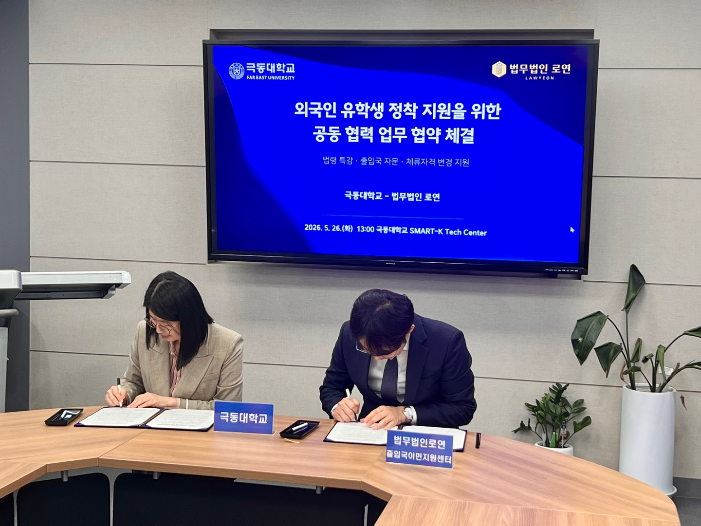
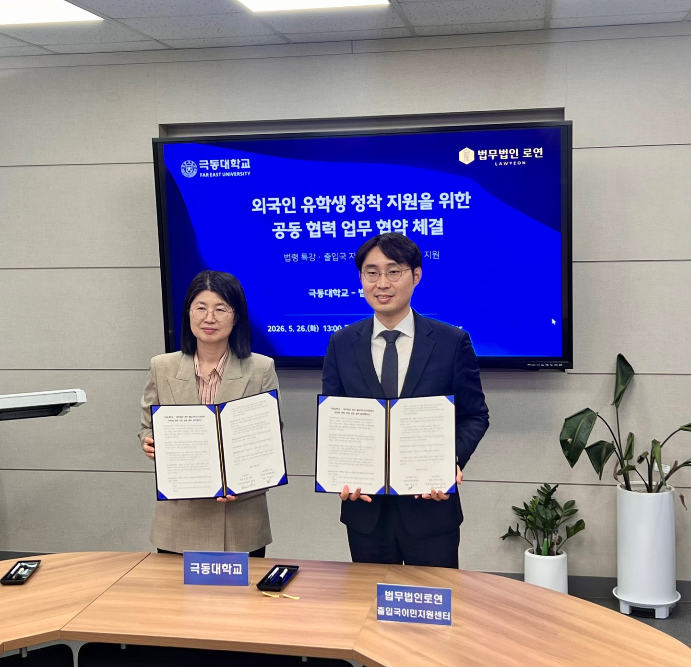

Signing of the MOU
On 26 May 2026, Lawyeon Visa & Immigration Center signed a memorandum of understanding with Far East University to support international students with employment and stable career planning.
The agreement is aimed at providing professional support for the visa, residency, and legal matters that international students encounter as they seek employment and settle in Korea after graduation.

Lecture at the international student job fair
On the day the MOU was signed, Law Firm Lawyeon delivered a lecture to enrolled international students at the international student job fair held at Far East University's SMART-K tech Center.
The lecture covered the post-graduation visa roadmap for international students together with the Korean legal framework on work visas. It focused on the pathways and requirements for changing from a student (D-2) status to a work status, and on the aspects of Korean law that students must understand to maintain their residency stably after finding employment.
Free legal clinic booth
At the job fair, Law Firm Lawyeon also ran a legal clinic booth offering free visa and legal consultation to international students.
At the legal clinic, our team advised on the visa pathways available after graduation according to each student's qualifications, major, and career situation, and provided one-on-one consultations on the questions that frequently arise during a change of residency status and the preparation of a work visa.

Continuing support
Building on this agreement, Lawyeon Visa & Immigration Center will continue to support Far East University's international students with visa-roadmap planning and legal advice, so that they can find employment and settle in Korea with stability after graduation.
Matters concerning post-graduation career planning and the transition to a work visa are supported by experienced attorneys together with immigration specialists.